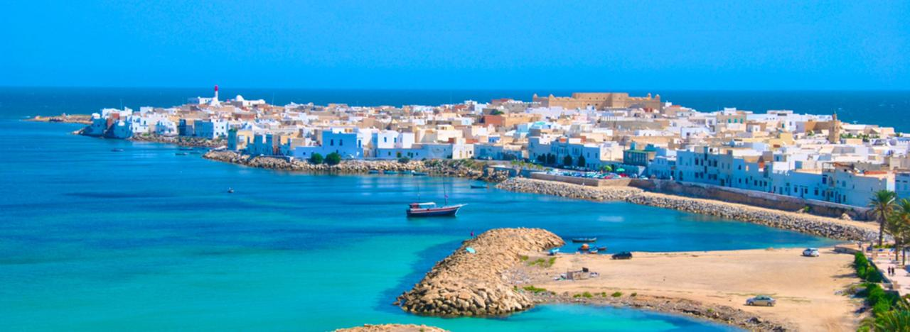
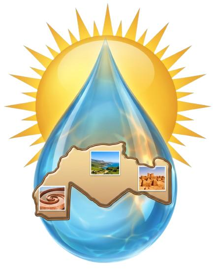

Dessalement et Energies Renouvelables : Retour d’Expériences

Dates : 29-30-31 Aout 2026
Lieu : Village des Langues, Campus Universitaire Rejiche. Mahdia-Tunisie
Organisé par le Réseau Maghrébin : Changement Climatique, Eau et Energies Renouvelables (2.C.2.E. R)
En association avec : l’E.N.I.Tunis, l’ISSAT Mahdia et CONNECT Mahdia.

Devant la pénurie d'énergie et des ressources en eau résultant principalement du changement climatique et les crises économiques, sanitaires et sociales qui en découlent surtout dans la région du Maghreb qui souffre déjà d'un manque chronique d'eau, d'énergie et de la désertification de ses terres faisant que beaucoup de ses jeunes et de ses cadres ont été amenés à émigrer.
La disponibilité des sources potentielles d'énergies renouvelables et des eaux saumâtres principalement l'eau de mer font que le Maghreb connait actuellement un développement important des centres de recherches et d’expertises dans ces domaines et la naissance d’une jeune industrie spécialisée nécessitant encore plus de soutien en vue d’un développement durable.
Il est donc nécessaire que les décideurs politiques assument le rôle de catalyseur pour que chacun de ces acteurs joue pleinement son rôle d’une façon concertée et s'insérant pleinement dans une stratégie commune celle du Développement Durable du Maghreb en proposant des solutions adaptées à la culture, aux ressources naturelles et humaines de ses populations.
Dans ce contexte, le rôle des Académiciens ne devrait plus se limiter à la formation scientifique basée sur la recherche fondamentale mais doit s’orienter plus vers la Recherche – Innovation pour devenir une force de proposition. Ce rôle ne peut être efficace que par l’association avec les industriels aussi bien au niveau de la formation ciblée que de la conception des prototypes. Ces industriels doivent être conscients des intérêts régionaux afin de garantir la durabilité économique de la région.
Ces Rencontres, que nous espérons seront durables, sont une modeste contribution de notre réseau à ce projet Maghrébin ambitieux : le Maghreb des Sciences.